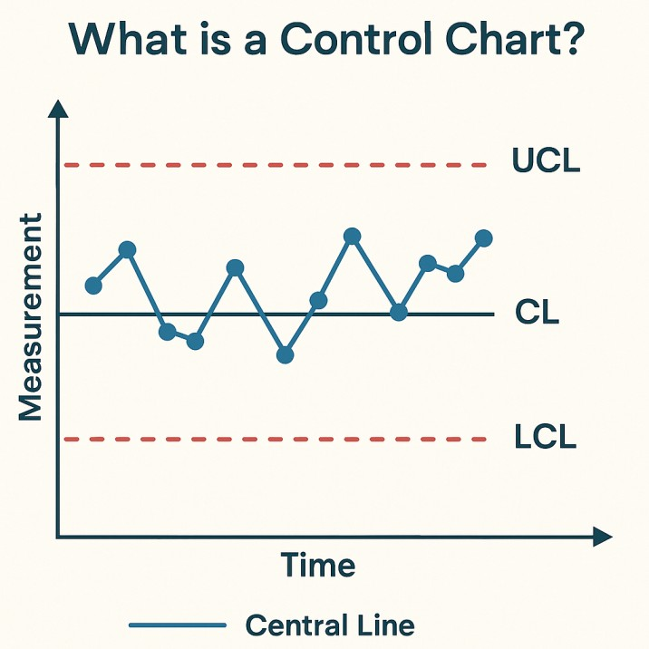
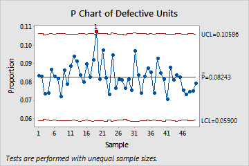
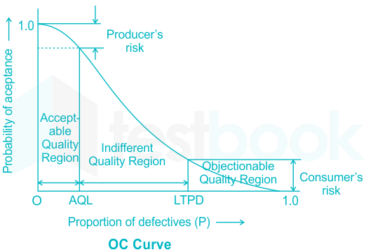

STATISTICAL QUALITY CONTROL (SQC) Exam Revision Guide for Competitive Exams
High-frequency topics: Control Charts for Variables ($\bar{X}, R$), Control Charts for Attributes ($p, c, np$), Control Limits ($\pm 3\sigma$), Process Capability ($C_p, C_{pk}$), Acceptance Sampling (AQL, LTPD, Producer's $\alpha$ vs Consumer's $\beta$ Risk).
1. Core Concepts & Definitions
1.1 Quality Control — Overall Scope
Quality Control (QC) = Techniques to ensure products meet specifications
Two main branches:
1. Process Control: Monitor ongoing production; detect shifts (SPC/control charts)
2. Acceptance Sampling: Inspect incoming/finished batches; decide accept/reject
Focus: Detect and prevent defects; maintain consistency
1.2 Statistical Process Control (SPC) — Control Charts
Control Chart = Plot of quality characteristic over time with control limits
UCL (Upper Control Limit) = Center + 3σ
LCL (Lower Control Limit) = Center - 3σ
Center line = Process mean
Interpretation:
• Point within ±3σ: In control (random variation only)
• Point outside ±3σ: Out of control (assignable cause)
• Pattern (run, trend, cycle): May indicate problem even if within limits
1.3 Charts for Variables (Measured Data)
X̄ Chart (Mean Chart):
• Plots sample means; monitors process average
• Detects shifts in process center
R Chart (Range Chart):
• Plots sample ranges; monitors process variation/spread
• Detects changes in process variability
Used together (X̄-R control charts):
• Pair monitors both location and spread
• R chart must be in control for reliable X̄ chart interpretation
Sample size: n = 4–6 typical per rational subgroup

Figure 1.1: $\bar{X}\text{-}R$ Control Charts — Center Line ($\bar{\bar{X}}$), Upper/Lower Control Limits ($\text{UCL}, \text{LCL}$), & Sample Variations.
1.4 Charts for Attributes (Count Data)
p Chart (Proportion Defective):
• Plots proportion defective per sample
• Used for: Defective/non-defective (binary outcome)
• Variable sample size acceptable (formula adjusts)
c Chart (Number of Defects):
• Plots number of defects per sample/item
• Used for: Counting defects (scratches, holes, etc.)
• Requires fixed sample size/unit
np Chart (Number Defective, Fixed n):
• Plots number of defects in fixed sample size
• Alternative to p chart when sample size fixed

Figure 1.2: Attribute Control Charts — $p$ Chart (Fraction Defective) vs $c$ Chart (Defect Count per Unit).
1.5 Acceptance Sampling (Lot Decision)
Acceptance Sampling = Inspect subset of lot; decide accept/reject entire lot
Single Sampling Plan (c, n):
• Inspect n items from lot
• If defects ≤ c: Accept lot
• If defects > c: Reject lot
Double Sampling Plan:
• First sample: Accept/Reject/Conditional
• Second sample: Final decision if conditional
Operating Characteristic (OC) Curve:
• Plots P(Accept) vs defect rate (p)
• Shows sampling plan performance
1.6 Key Sampling Parameters
AQL (Acceptable Quality Level):
= Maximum defect rate considered "good" (producer wants high acceptance)
= Typically 0.5%–2%
= Risk: α = P(reject good lot) [Producer's risk]
LTPD (Lot Tolerance Percent Defective):
= Minimum defect rate considered "bad" (consumer wants rejection)
= Typically 4%–10%
= Risk: β = P(accept bad lot) [Consumer's risk]
Typical values: α = 5% (Type I error), β = 10% (Type II error)

Figure 1.3: Operating Characteristic (OC) Curve — Producer's Risk ($\alpha$ at AQL) & Consumer's Risk ($\beta$ at LTPD).
1.7 Process Capability (Cp, Cpk)
Cp (Capability Index):
= (USL - LSL) / (6σ)
= Compares specification width to process natural spread
Cpk (Capability Index, Centered):
= min[(USL - μ)/(3σ), (μ - LSL)/(3σ)]
= Accounts for centering; more realistic than Cp
Six Sigma quality level corresponds to $\text{DPMO} \le 3.4$ ($C_{pk} \ge 2.0$).
3. Control Charts & Sampling Classification
3.1 Control Chart Types Matrix
Chart Type
Data Type
What It Monitors
Best For
Exam Note
X̄ Chart
Variables (measured)
Process mean/location
Dimensions, weights, times
Pair with R chart; detects mean shifts
R Chart
Variables (measured)
Process spread/variation
Monitor consistency
Must be in control before X̄ interpretation valid
p Chart
Attributes (defect %)
Proportion defective
Binary outcomes; variable n allowed
FREQUENTLY TESTED
c Chart
Attributes (defect count)
Number of defects per unit
Fixed sample size; rare defects
Uses Poisson distribution
np Chart
Attributes (defect count)
Number defective in fixed n
Alternative to p chart
Requires fixed sample size
3.2 Acceptance Sampling Methods
Method
Approach
Use Case
Advantage / Disadvantage
Single Sampling
One sample, one decision (Accept/Reject)
Simple, clear decisions
Efficient but less information
Double Sampling
First sample → decision or second sample → final decision
Reduce inspection when decision clear early
Average inspection < single; more complex logic
Sequential Sampling
Continue inspecting until decision reached
Minimize inspection cost on average
Most efficient; complex administration
OC Curve Analysis
Plot P(Accept) vs lot quality (defect rate)
Evaluate plan performance at different defect rates
Shows α, β, AQL, LTPD graphically
4. Key Points to Remember
Control chart limits: $\pm 3\sigma$ from center line (99.73% within if normal). Points outside = out of control; patterns also indicate problems.
X̄-R charts monitor both process mean ($\bar{X}$) and spread ($R$) simultaneously. R chart must be in control before X̄ chart valid.
p chart for proportion defective (binary); c chart for count of defects per unit (Poisson).FREQUENTLY TESTED distinction.
Control chart constants ($A_2, D_3, D_4, d_2$) depend on sample size $n$. Tables provided in exams.
AQL = good lot quality (producer protects); LTPD = bad lot quality (consumer protects). $\alpha$ risk = reject good lot; $\beta$ risk = accept bad lot.
OC Curve shows P(Accept) for various defect rates; steeper curve with larger sample size $n$ (better discrimination).
Acceptance sampling is economic trade-off: inspection cost vs risk of accepting defective lot. Statistical decision, not 100% inspection.
Process capability $C_{pk} \ge 1.33$ acceptable; $C_{pk} \ge 1.67$ excellent. Six Sigma $= C_{pk} = 2.0$ ($\text{DPMO} = 3.4$).
$C_p$ ignores centering; $C_{pk}$ accounts for centering (more realistic). $C_p = C_{pk}$ only when process centered on target.
Rational subgrouping: Sample close together in time to detect process shifts. Consecutive units more likely to show assignable cause.
Type I error ($\alpha$): Reject conforming process. Type II error ($\beta$): Accept non-conforming lot. Both controlled in sampling plan design.
Single sampling simple but less efficient; double/sequential sampling reduce average inspection. Choice depends on cost vs information value.
Attribute charts ($p, c, np$) used when measurement expensive or impossible. Variables charts ($\bar{X}, R$) preferred if measurement available (more sensitive).
Out-of-control signals: Individual point $> 3\sigma$, runs ($8+$ consecutive on one side), trend, cycle patterns. Investigate assignable cause.